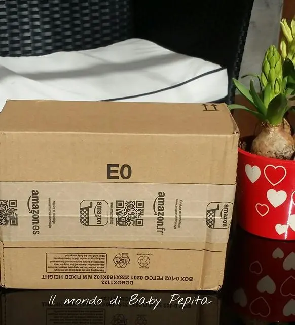
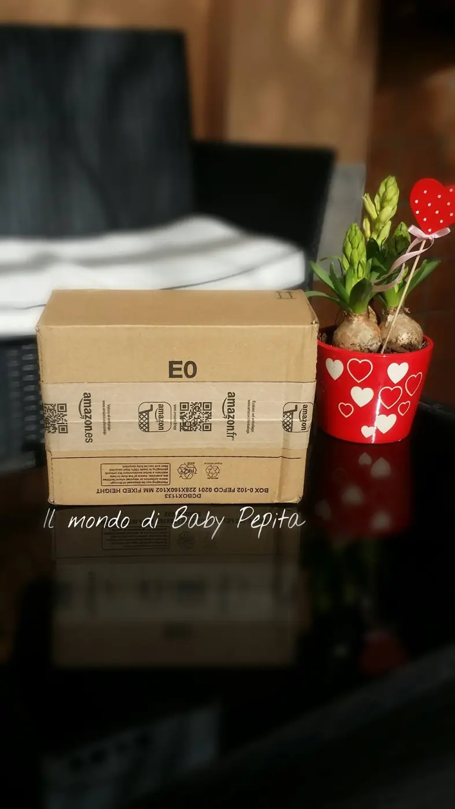
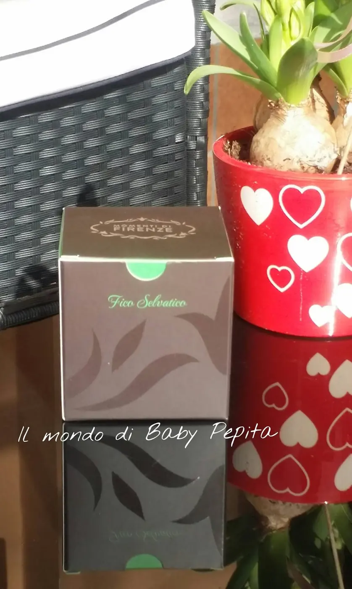
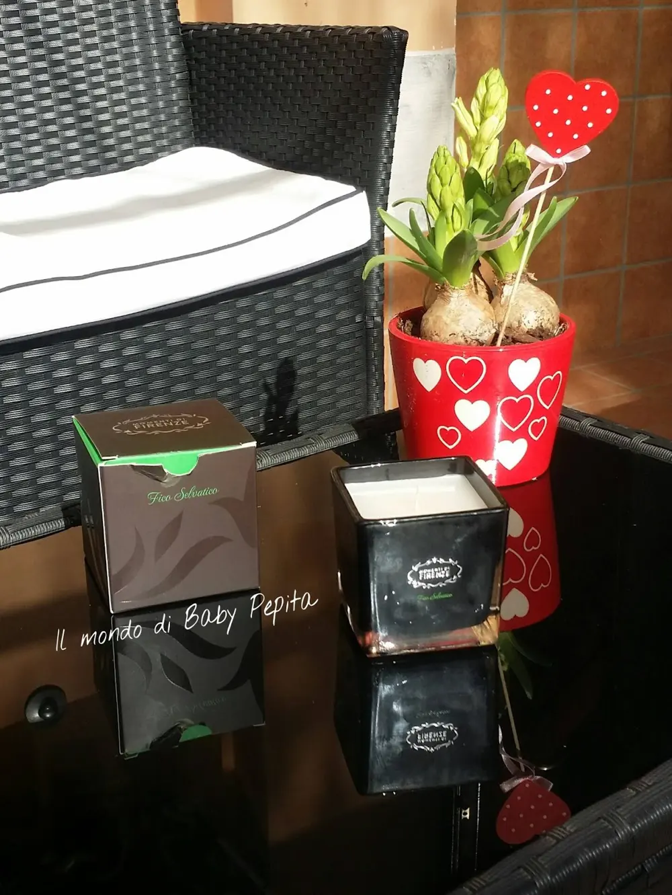
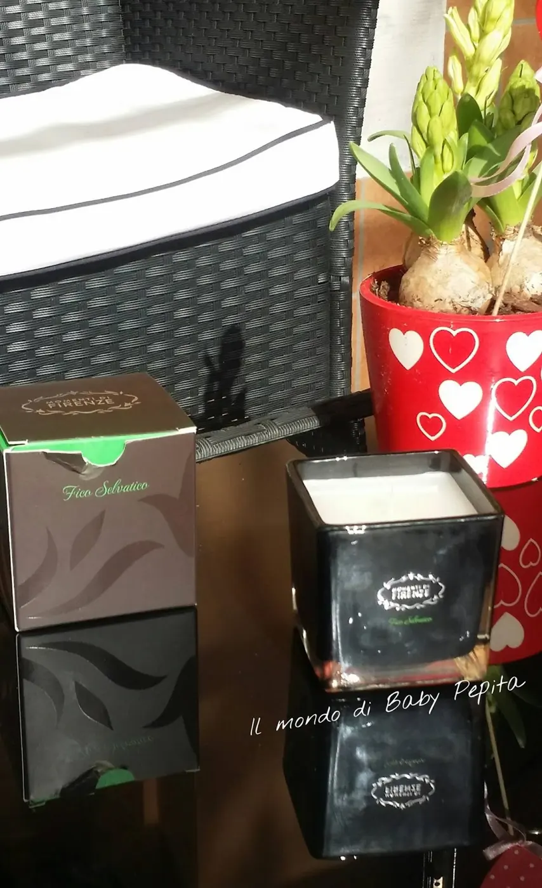
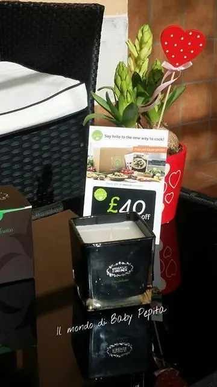

Momenti di Firenze - candela profumata al fico selvatico
Hola amigos.
Conoscete Amazon no?
e ieri mi è arrivato un pacchettino mooolto gradito. .
L'azienda è MOMENTI DI FIRENZE e devo dire che sono stati gentilissimi in tutto per non parlare della precisione, sì, perchè mi arrivò l'email della spedizione che era prevista entro il martedì 16 e vi giuro che martedì 16 il pacco era a destinazione. .STUPENDO DIREI. .

Quindi se volete prendere idea per un regalo tutto profumato per ambiente, potrete oltre che fare una bella figura ma senza dubbio stare sereni sui tempi d'arrivo. .

Detto ciò, vi mostro direttamente questa meravigliosa candela al Fico Selvatico. .
Si presenta in un'elegante scatola con disegni in rilievo tono su tono, direi molto particolare anche da regalare. .
La candela è per lo più quadrata riposta all'interno di un vasetto di vetro nero lucido. .L'impressione che ha fatto a me da subito, è stata di una cosa chic e fine . .

Dal design tutto italiano e soprattutto artigianale, l'azienda ha voluto valorizzare l'eleganza di una candela che può essere usata benissimamente per arredare un salotto o un punto del vostro appartamento che ritenete il più ospitale. .